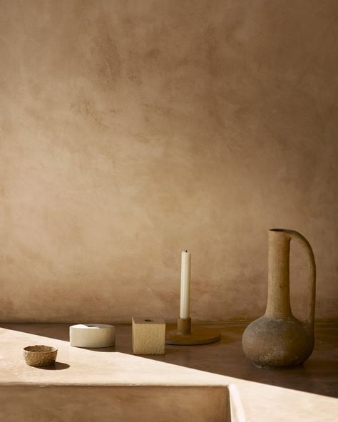
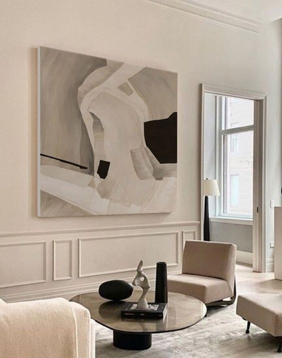
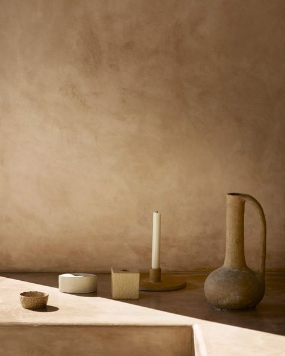
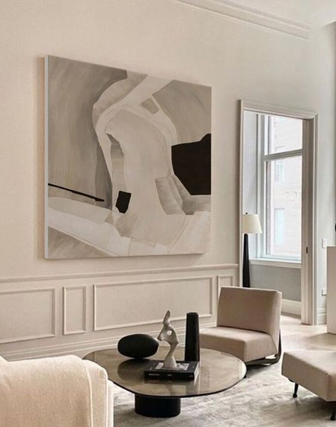

Where innovation meets tradition
Where innovation meets tradition
At CPE we believe that less is more. Our approach to minimalist interior design focuses on simplicity, clean lines and uncluttered spaces.
Creating environments that are not only visually appealing but also conductive to a sense of calm and harmony.
Explore our portfolio to see examples of our work and get inspired for your own project.
We look foward to collaboratinf with you to bring your minimalist interior design dreams to life.
 


